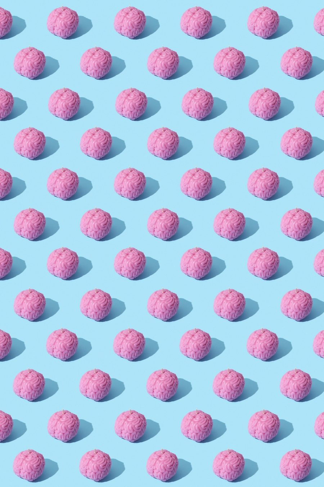

As I continue to work in and learn about the psychedelic industry, I am constantly reminded that the current industry landscape has been super charged in the last few years. This week, the Synthesis Institute hosted a webinar which dropped an incredible amount of knowledge. Here are 4 takeaways from the past three years of psychedelics that really blew my mind 🤯:

- From a $0 to a multi-billion $ industry After an almost 50-year dormancy, the psychedelic space has grown leaps and bounds in the past few years. Everything from telemedicine Ketamine startups like Curio to tech driven apps such as Homecoming to biotech pharmaceuticals including Cybin have been accepting VC, grant, and/or government money. The psychedelic drug market alone is set to double to over $6 Billion in the next four years.
- 100s of Psychedelic-Assisted Therapists have become 1000s For generations, psychedelic guides have existed as Indigenous cultures that have a history of these practices. Up until recently consumers found it challenging to find a therapist or guide to help make sense of these transformational experiences as it was often an underground pursuit. Today, companies like Multidisciplinary Association for Psychedelic Studies (MAPS), the Synthesis Institute, and Psychedelics Today offer courses and trainings bringing assistance above ground.
- The "War on Drugs" became NIH funded research The 50-year psychedelic dormancy mentioned above began in 1971 after US President Nixon declared a ‘War on Drugs’. During this time psychedelic research started decades earlier all but stopped. Today the industry points to 2018/19 as watershed years of renaissance due to the advances in the scientific, public, and regulatory communities as well as the designation of psilocybin-assisted psychotherapy to “breakthrough therapy” status for treatment-resistant depression by the U.S. Food and Drug Administration (FDA), opening the floodgates for government funded research.
- Companies are rethinking business models to include underserved communities With the acknowledgement that the War on Drugs has had profound unequal outcomes specifically on underserved and marginalized communities, companies are now having conversations about how to make their services available to those in need. While there is a lot of work to be done, many companies have partnered with organizations such Chacruna Institute, Heroic Hearts Project, and People of Color Psychedelic Collective to effect real-time change.
These last 3 years have seen so much growth, I’m excited to think about what the next 3 will bring.
Big thank you to Frederica Helmiere, Sara Reed, Alex Belser, PhD, Julian Vayne, and Kylea Taylor who led the conversation and thought-leadership panel.